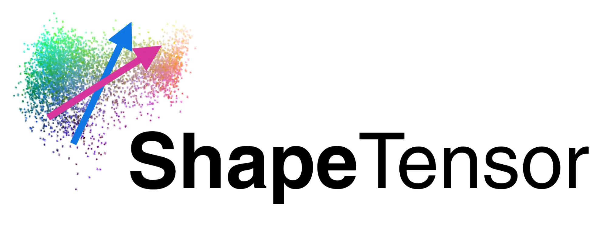
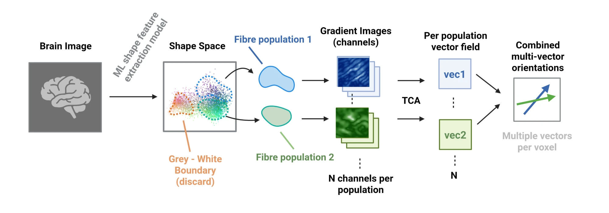
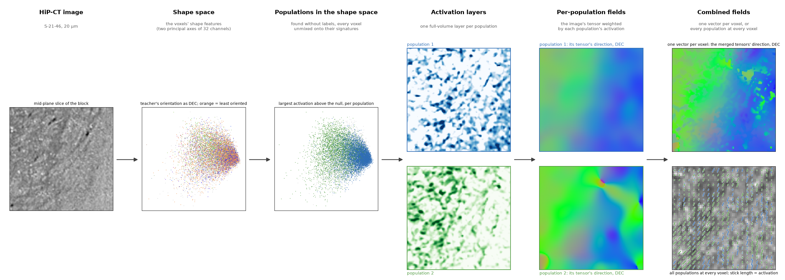

ShapeTensor¶

Fibre orientation fields of high-resolution white-matter volumes, from a pretrained shape-feature space, on the GPU.
Tractography on microscopy-scale volumes (hierarchical phase-contrast X-ray tomography, HiP-CT, at 20 µm; serial histology; light-sheet) starts from a local orientation at every voxel. The standard estimate is the structure tensor: the direction of least gradient energy in a window. It is accurate and cheap, and it has two systematic failures that go straight into streamlines: at a tissue interface the gradients of the step overwhelm those of the fibre texture and the direction is dragged into the plane of the boundary; where bundles cross a single tensor can only report the bisector.
ShapeTensor replaces the intensity with a pretrained 3-D network's shape features and runs one pipeline:
- Shape features — a contrast-agnostic 3-D UNet (anatomix), read at the encoder layer whose channels encode fibre orientation.
- Separating populations in the shape space — the orientation code is read without labels (the structure tensor at confident sites is the teacher), the populations present are the modes of the window's orientation distribution, and every voxel is unmixed onto their signatures: one activation layer per population, a full-volume image of that population's shape.
- One tensor per population — the image's structure tensor with the gradients weighted by the population's activation.
- Merging — one vector per voxel from the merged population tensors, or every population's vector with its activation as weight. No masks: the weights say where a population is present.
import shapetensor as st
vec = st.shapetensor(image, rho=10.0) # (3, Z, Y, X): one direction per voxel
vecs = st.shapetensor(image, rho=10.0, multi=True) # (N, 3, Z, Y, X): every population, ordered by activation
vec = st.structure_tensor(image, rho=10.0) # the excised structure tensor: the baselineThe structure tensor it is compared with runs at the same σ and ρ as every tensor in the pipeline, and the boundary-robust (excised) structure tensor is the package's baseline and the pipeline's teacher.


The idea, and the same stages on a 192³ block of HiP-CT: the image, its voxels in the shape space, the populations found there, their activation layers, each population's field, and the combined fields.
Read the pipeline for each stage, parameters for what each setting does to the field, validation for what the phantoms show, and real data for HiP-CT and BigBrain.
Status
Version 0.2. The research notes behind every design decision, with all the numbers, are in the repository's
notes/ directory; the documentation keeps to what the package does and what has been verified.